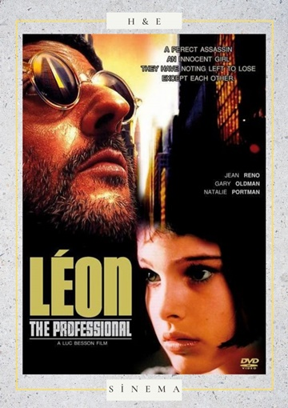
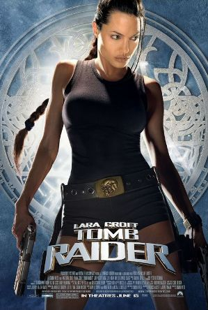
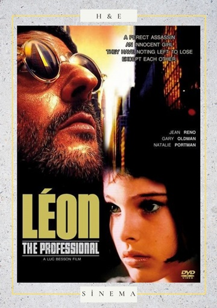
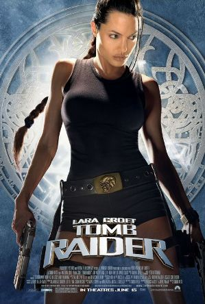

Baba 1/2/3: Vaftiz babası "Don" Vito Corleone, New York'taki Corleone mafya ailesinin başıdır. Kızının düğününde bulunuyor. Vito'nun en küçük oğlu ve madalyalı bir İkinci Dünya Savaşı Denizcisi olan Michael da düğünde hazır bulunuyor. Michael, aile şirketinin bir parçası olmakla ilgilenmiyor gibi görünüyor. Vito güçlü bir adamdır ve kendisine saygı gösteren herkese karşı naziktir, ancak saygı duymayanlara karşı acımasızdır. Ancak güçlü ve hain bir rakip uyuşturucu satmak istediğinde ve bunun için Don'un etkisine ihtiyaç duyduğunda, Vito bunu yapmayı reddeder. Ardından, Vito'nun solmakta olan eski değerleri ile Michael'ın yapmakta en isteksiz olduğu şeyi yapmasına ve Corleone ailesini parçalayabilecek diğer tüm mafya ailelerine karşı bir mafya savaşı başlatmasına neden olabilecek yeni yöntemler arasında bir çatışma var.